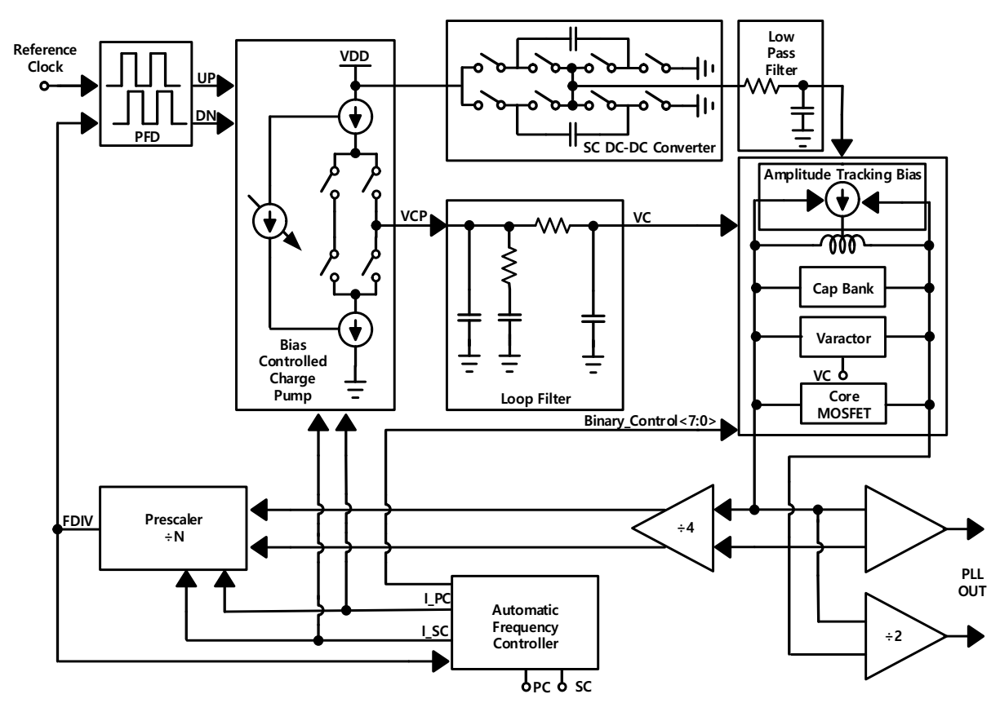
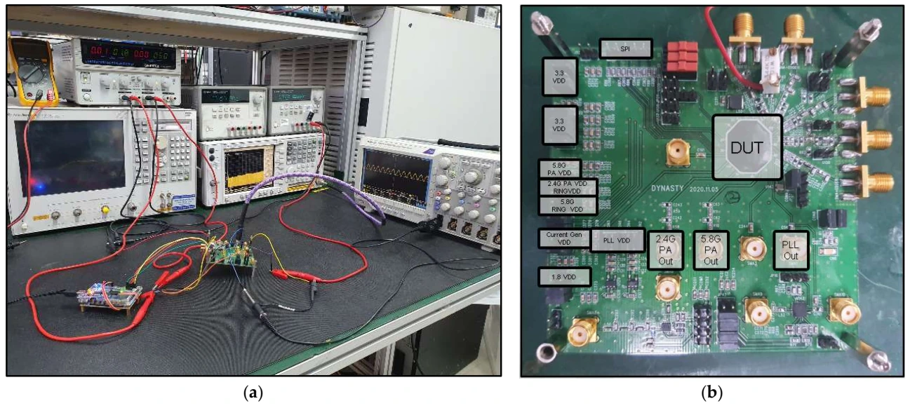
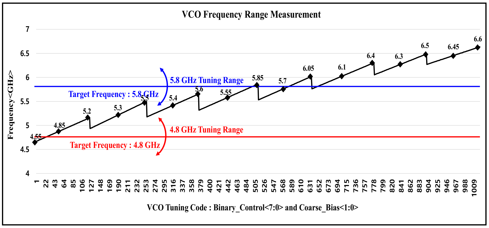
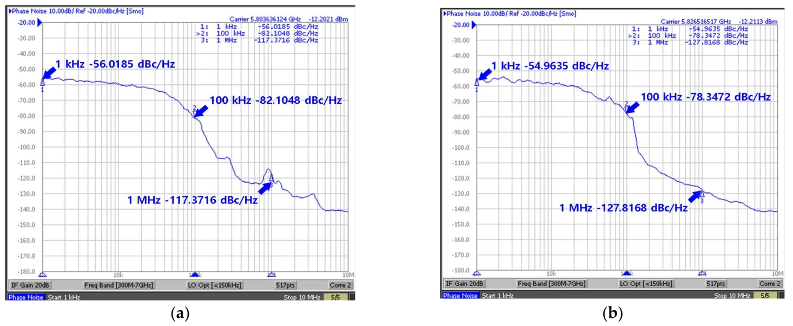
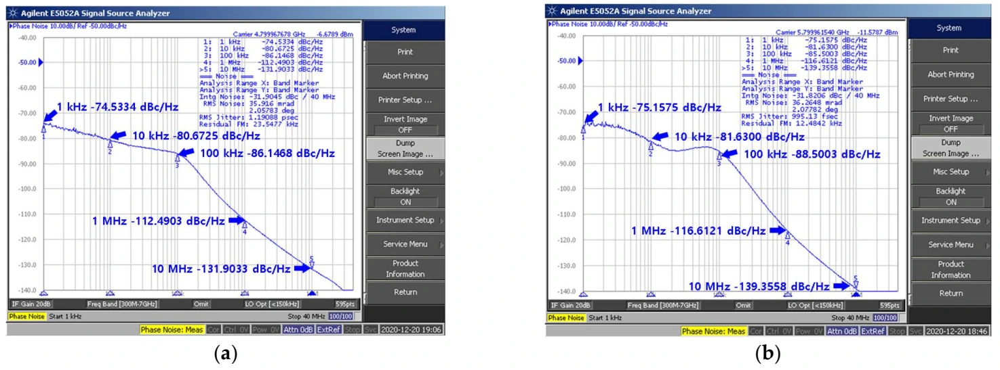

怎样读论文里的硅片结果
跟读 Jo 等人的 180 nm CMOS 双频整数-N PLL。按 框图和测量端口 → VCO 调谐与噪声 → 闭环相噪与 jitter → 性能表和复核练习 的顺序，把测量对象、工况和读数记到同一行。点击正文图片可打开大图。
1. 先在框图上找清楚量的是哪一路


左上角 50 MHz 晶振参考进入 PFD，UP/DN 经可调偏置的电荷泵和同一组环路滤波器变成 VCO 控制电压。右侧有两条输出路径。5.8 GHz 直接输出，2.4 GHz 由锁在 4.8 GHz 的 VCO 经 CML ÷2 得到。反馈另走 CML ÷4 和可编程分频网络。按 VCO 到 PFD 的总反馈分频计算，两种锁定点分别对应 96 和 116。


PDF 第 7 页 Fig. 7 是芯片版图，文中尺寸为 1200 µm × 800 µm。Fig. 8 交代测试环境和板上端口。到了 Fig. 12 再从截图顶边确认仪器是 Agilent E5052A，顺便记下仪器显示的载波频率。Jo 等 · PDF 第 7 页 · §4 / Fig. 7
2. 用调谐图和 VCO 噪声图分别回答两个问题


每个上升段内，可以从邻近码点估读每码改变多少频率。换段时可见回跳和频率重叠，跨段直接求平均会把局部灵敏度混在一起。横轴是数字码，要得到行为模型用的 VCO 增益（Hz/V），还需固定码段并获得频率随模拟控制电压变化的曲线。Fig. 9 两端标出约 4.55–6.6 GHz，而 Table 1 与结论给的是 4.5–6.1 GHz。记录时把两处数值各自附上出处。


在 1 MHz 频偏，(a) 约 −117.37，(b) 约 −127.82 dBc/Hz，开启时低约 10.45 dB。在 100 kHz，读数却从约 −82.10 变到 −78.35 dBc/Hz，该标记处高约 3.76 dB。截图顶部载波也略有不同（约 5.804 和 5.827 GHz）。这组结果适合记录供电方案对 VCO 噪声的频偏依赖，比较整机闭环性能要切换到 Fig. 12。
3. 在仪器截图里读闭环相噪与 RMS jitter


- 找同一个频偏。 两张图都顺着横轴找到 1 MHz，再读 marker 4。(a) 是 −112.4903，(b) 是 −116.6121 dBc/Hz。5.8 GHz 工况在这个频偏处低 4.12 dB。在 10 kHz，两者只差约 0.96 dB，比较结果随频偏变化。
- 核对截图内两种标注。 Fig. 12(b) 的 100 kHz 蓝字为 −88.5003 dBc/Hz，仪器 marker 3 表为 −85.5003 dBc/Hz。这里将两处读数并记，跨频段拟合时先跳过这个有歧义的点，待取得原始数据复核。Table 1 给出 100 kHz 环路带宽，这个量可与曲线弯折的位置对照。要比较两设计的带宽，还需确认各自的带宽定义。
- 分清点读数与积分结果。 (a) 仪器栏显示 35.916 mrad、1.19088 ps，(b) 显示 36.2648 mrad、995.13 fs。仪器页显示扫频 1 kHz–40 MHz，积分分析范围字段是 Band Marker，积分噪声栏标注 40 MHz。引用时保留该截图设置。若需与 12 kHz–20 MHz 的规格直接比较，要取得相噪曲线数据，统一积分上下限和杂散计入规则后重新积分。1 MHz 单点无法推出 RMS jitter。
可以用截图里已经积分得到的相位 RMS 复算时间 RMS。把 5.8 GHz 工况的 36.2648 mrad 换成 0.0362648 rad，除以载波角频率，得到约 0.995 ps。5.8 GHz 工况的相位 RMS 稍大，但载波更高，所以换算后的时间 RMS 更小。
用理想 ÷2 换算 4.8 GHz 的 −112.4903 dBc/Hz，得到 2.4 GHz 约 −118.51 dBc/Hz，与结论的 −118.5 一致。Fig. 12(a) 展示的是分频前的 4.8 GHz 曲线。若要独立评价真实 ÷2 的附加噪声，需要 2.4 GHz 端口的相噪曲线。
4. 把 Table 1 变成可比较的测量记录
| 表中字段 | 本文数值 | 跨论文比较时记录什么 |
|---|---|---|
| 工艺、供电、功耗 | 180 nm CMOS，1.8 V，8 mW | 功耗包含哪些模块，尤其输出缓冲及分频器。 |
| 参考与环路带宽 | 50 MHz，100 kHz | 参考源相噪、带宽定义和环路配置。 |
| 频率范围 | Table 1 为 4.5–6.1 GHz | 注明这是文中列出的 VCO 范围。比较输出端指标时另记载波和分频比。 |
| 单点相噪 | −116.6 / −118.5 dBc/Hz，1 MHz | 前者对应 5.8 GHz 图中实测，后者对应 2.4 GHz 分频工况。 |
| FoM | −202.8 dB（5.8 GHz），−197 dB（2.4 GHz） | 表下注明用单点相噪、载波与偏移比、功耗归一化。复算 5.8 GHz：−116.6 − 75.27 + 9.03 ≈ −202.84 dB。采用积分 jitter 定义的 FoM 需另列。 |
| 建立时间（§5） | <20 µs | 引用时标为论文报告值。用于模型验收还需频率跳变起点、终点、误差带和连续保持时间。 |
Jo 等 · PDF 第 10 页 · Table 1 和 §5
动手复核
先用图作答，再展开核对。
两张图都写着 5.8 GHz，为什么 Fig. 11(b) 的 −127.82 不能填进整机性能表？
Fig. 11(b) 是 DC-DC 开启的 VCO 工况。整机性能表用闭环 PLL 的 Fig. 12(b)。可抄成一行：闭环直出｜5.8 GHz｜1 MHz 频偏｜−116.61 dBc/Hz｜Agilent E5052A｜Fig. 12(b)。
看到 −118.5 dBc/Hz，能在哪张图找到 2.4 GHz 的 marker？
先从 Fig. 3 确认输出 ÷2，再查 Fig. 12(a) 的 4.8 GHz marker 4，最后按 §5 复算约 −6.02 dB 的变化。在测量表注明这项与理想分频换算一致，论文未展示 2.4 GHz 的独立截图。
模型只对上 1 MHz 读数，可以写“抖动与锁定时间也已验收”吗？
当前只可填入对应输出节点的单点相噪对照。抖动还需同带积分和杂散规则。锁定时间还需同频率跳变和锁定判据。对不上测试条件的项分别保留为待验证。
原图 © 2022 Jo 等，Electronics 11(7), 1118，CC BY 4.0。图像转为 WebP，保留原图构图与标注。